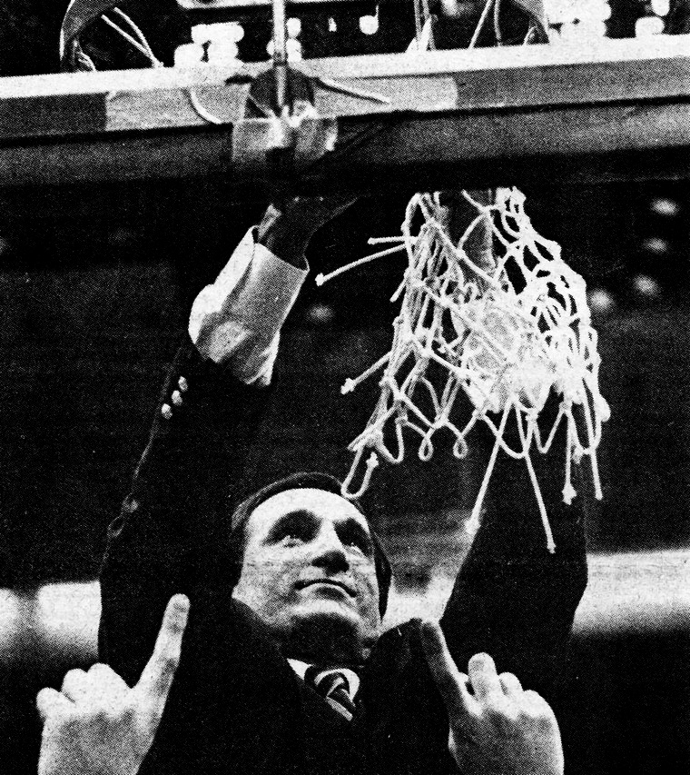

COACH KDUKE · NCAA
CAMERON INDOOR, 2011 · FOTO: BRYAN HOROWITZ, CC BY-SA 2.0
CHARLA · WEST POINT, 2010
FOTO: AHODGES7, CC BY-SA 3.0
RECREACIÓN
RECREACIÓN

KRZYZEWSKI CORTA LA RED · THE CHRONICLE, 10/3/1986 · FOTO: LANCE MORITZ, D. P.FOTOS: BRYAN HOROWITZ (CC BY-SA 2.0) · AHODGES7 (CC BY-SA 3.0) · LANCE MORITZ / THE CHRONICLE
(DOMINIO PÚBLICO), VÍA WIKIMEDIA COMMONS · PISTA, FICHAS, MANO, BALANZA Y PUÑO: RECREACIÓN